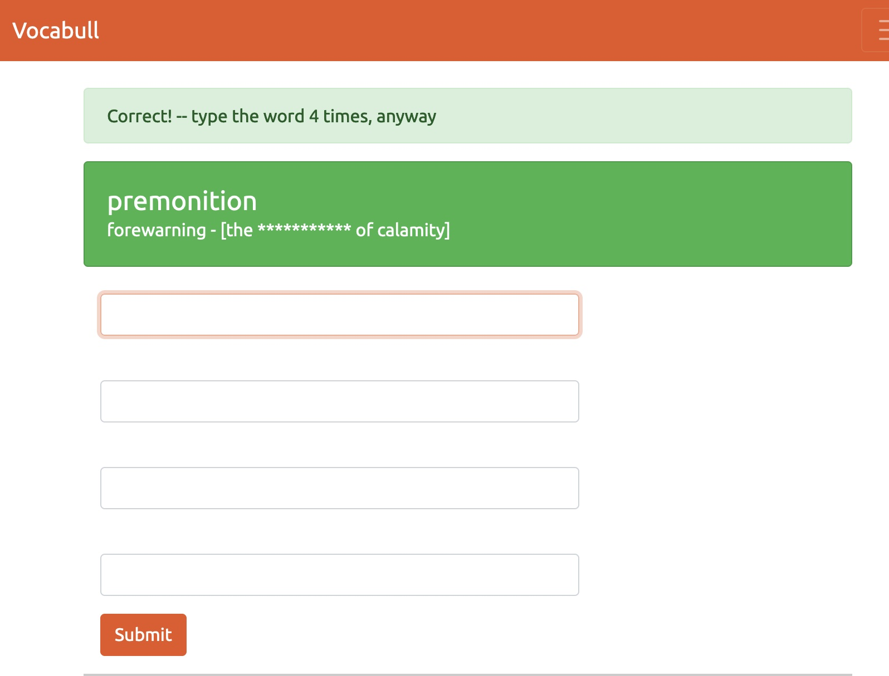

Table of Contents
1 はじめに
先日の エントリー で書いたようにPythonのWebフレームワークであるFlaskに入門したので、Flaskを使ってボキャビル用のWebアプリ Vocabull (server) を作って公開しました。括弧付きで (server) とあるのは、以前にもボキャビル用のスクリプト 旧Vocabull を作っていてそのWebアプリ版のつもりで開発を始めたためです。だいぶ規模が大きくなり、ほとんど別物になりましたが。。。
2 Vocabull (server)
2.1 Overview
フリーで使える pythonanywhere にデプロイしてみました。クラウドです。なんかすごい 笑。アクセスは こちら から。

Vocabull (server; 以下、単にVocabullと記載)は単語カード+アルファの機能を持つボキャビル用Webアプリです。以下の3つのモードがあります。
- 単語カード(単語 → 意味) →
word to defモード - 単語カード(意味 → 単語) →
def to wordモード - スペル練習 →
type wordモード
VocabullはWebアプリなので、iPhoneやAndroidなどのモバイルデバイスからもアクセスできます。私のGoogle Pixel 4上のFirefoxからはこんな感じです:

2.2 Vocabullの特長
2.2.1 直近の知らない単語が繰り返し出てくる
単語カードモードでは、直近の知らない単語10個を(覚えるまで)順にリピートします。知っている単語は次々と進み、知らない単語だけ繰り返し練習できるので、単なる単語カードアプリよりも記憶効率が良いと思います。
2.2.2 モダンなUI
Vocabullは Bootstrap 5 +テーマ United を使っていて、モダンなルックアンドフィールのユーザーインタフェースになっています。
2.2.3 パソコンでもモバイルでも
スペル練習モードでは単語を繰り返しタイプするのでパソコンが向いていますが、単語カードモードはモバイルデバイスでソファーやベッドの上からでもボキャビルできます。我が家では、10年前のMacBook上でサーバーを動かしています。家庭内Wifiで使った感じでは、レスポンスは良好と思います。
2.2.4 即時セーブ
どのデバイスからアクセスしたかによらず、学習状況はリアルタイムにデータベースに保存されます。複数デバイスから同時にアクセス可能です。
3 使い方
クイックスタートはVocabullサーバーが動いていることを前提とした、Webアプリの操作説明です。お試し版を pythonanywhere.comで公開 しました。インストール方法は後述します。
3.1 クイックスタート
3.1.1 ユーザー登録＆ログイン
- ブラウザーから
localhost:5000またはVocabullサーバーの動いているURLにアクセスします。お試し版は こちらから どうぞ。

- 画面上部にあるナビゲーションバー右隅にあるメニューアイコン >
Login>Click here to registerとクリックする

- ユーザー名とパスワードを入力してアカウントを作成する
- パスワードはハッシュ値を保存するだけなので(仮にハッキングされても)安全です
- ユーザー名とパスワードを入力してログインする
3.1.2 ブックを作成し、単語を登録する
- My Books >
Addボタンをクリック - ブック名をタイプして
Submitをクリック

- 新たに出来たブックカード >
Add wordをクリック - 単語(word)と意味(definition)を入力して
Submitをクリック- 何回か繰り返して複数単語を登録してください

3.1.3 あるいは、単語をファイルからインポートできる
- 単語定義ファイルを用意する
- 1行に1単語の定義を書く
- 行は「単語」「意味」(オプションで「例文」)をタブ記号で連結したもの
- 例えば:
strident shrill, harsh, rough [in more ******** tones] lassitude weariness, fatigue deleterious bad, harmful [a *********** effect on health]
- ブックページに移動する
Load from file>Browse...とクリックし、ファイルを選択する >Submit- 最大64KBの".txt"ファイルのみアップロードできます
3.1.4 単語カードモード

Practiceメニュー >word to def(単語 → 意味)またはdef to word(意味 → 単語)を選択- 練習画面が表示されるので、単語カードをクリックして答えを見る
- 単語を知らなかったら
Once moreをクリック- しばらくしたらまた出てきます
- 単語を覚えたら
Memorized for nowをクリック- このラウンドではもう出てきません(全ての単語を一巡するまで)
- 単語を知っていたら
Knew it!をクリック- 5ラウンド出てきません。。
Back to bookを押すとブック画面に戻る
3.1.5 スペルテスト＆練習モード
Practiceメニュー >type wordをクリック

- 「意味」が表示されるので単語をタイプ >
returnキーを押す - 合っていても間違っていても4回タイプさせられる
- 間違っていたらしばらく後でまた出てきます
- Tip: マウスよりもキーボードで
return(tabでもOK)を使ったほうが操作性が良いです

- 次の単語へ
4 サーバーセットアップ
- Python 3.10以降をセットアップする
- githubのレポジトリをクローンしてくる
git clone git@github.com:achiwa912/vbs.git
- (推奨)仮想環境を作る
cd vbs python -m venv ve source ./ve/bin/activate
- 前提ライブラリをインストールする
pip install -r requirements.txt
- 環境変数を設定する
export FLASK_APP=vbs.py
- データベース作成などの初期設定をする
flask initial-setup
- webサーバーをインストールして動かす
pip install gunicorn gunicorn --bind 0.0.0.0:5000 vbs:app
- WebブラウザーからサーバーURLのポート5000にアクセスする。例えば、
http://192.168.0.103:5000
5 Pythonanywhereについて
残念なことに Heroku が有料化してしまったので、ちまたで評判の良さそうな Pythonanywhere を使ってみました。開発者としてクラウド(Paas)を使うのは初めてですが、(ドキュメントもろくに読まず)適当に試行錯誤していたらデプロイできてしまいました。やったこと。
- https://www.pythonanywhere.com/pricing/ から
Create a Beginner accountをクリックし、アカウント登録する Consoleをクリックするとbashが使えるので、githubのレポジトリをクローンしてくる
git clone git@github.com:achiwa912/vbs.git
- virtual environmentを作成する
cd vbs mkvirtualenv ve
- 前提ライブラリを入れる
pip install -r requirements.txt
- メニューから
Webをクリックし、Flaskアプリを作成する Web> Virtualenvセクション に/home/achiwa912/.virtualenvs/veを指定する- Codeセクション >
/var/www/achiwa912_pythonanywhere_com_wsgi.pyをクリックし、2行(l10, 16)修正する
project_home = 'home/achiwa912/vbs' from vbs import app as application
- Reloadセクションの
Reload achiwa912.pythonanywhere.comをクリックする - SecurityセクションのForce HTTPSをenableにする
トラブったらLog filesセクションの achiwa912.pythonanywhere.com.error.log をクリックすると、どこが悪かったのかがわかります。
6 終わりに
私はボキャビル用に Quizlet を使っていたのですが、あまり外出先で使わなくなったので無料版に切り替えたところ、制限がきつくなって使い勝手に不満を感じていました。そこで、Flaskの勉強を兼ねて無料で使えるアプリを自作してみました。
(ほぼ)初めてのWebアプリにしては、なかなか良く出来たと自己満足しています。使っていただけるとうれしいです。